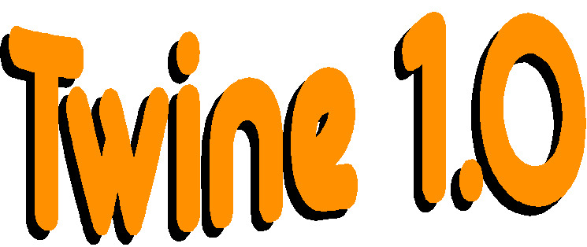
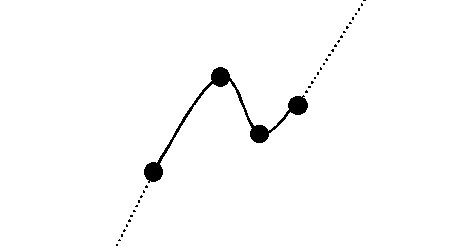
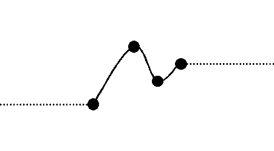

 |
Email: marshj@cs.man.ac.uk For usage information see the User Guide |
Programs often sample behaviour and interpolate between these samples in order to reduce the amount of information that needs to be stored. An animation system, for example, may just define object positions in key frames. By smoothly moving between these key positions, a reasonable frame-rate may be obtained, even though information is only stored for a couple of frames.
What Are Twines?
Simply following a straight line between successive positions in an interpolated sequence would result in undesirable behaviour. Sharp changes of direction would occur at control points as the line representing the change in value starts moving towards the next control point. A slightly more complex algorithm is therefore required that takes into account not only the position of the next control point, but also the one after that. In this way the interpolated values can be calculated such that they follow a curve, smoothly passing through control points with no abrupt changes in direction.There is a myriad of algorithms for generating curves. These are usually based on systems of control points, such as NURBS for example. Most algorithms however are more complex than required for interpolation. Often they are three or four-dimensional and involve either weights at control points or extra control points to influence the shape of the curve. Many are also not efficient to implement, especially at having their control points updated. For the purposes of interpolation, the aim is to estimate the shape in between control points, not describe it. A much simpler algorithm would therefore not only be sufficient, but desirable.
Twines are my implementation of two-dimensional curves. They relate one value to another using control points to define the shape of the curve. Some of the benefits of using twines are:
- Twines are intended for rapid real-time use. They are very efficient at being both modified and evaluated. Control points are stored in efficient balanced trees and the shape of the curve is implicit from this.
- The curve is guaranteed pass through all the control points smoothly.
- The curve will never loop or have other strange effects. There will always be one y value for any x value.
- Sections of curves between control points are only influenced by the closest four control points, so updates further along the curve will not cause unwanted side-effects.
- Easy to use as they are implemented in a shared DLL.
- They have a good name :-)
There are a number of different types of Twine. The type defines their behaviour outside of the range defined by the control points.
Limited Range
The Twine is constrained to the range defined by the control points with the maximum and minimum interval values. If an attempt is made to evaluate the Twine outside of this range, an error will be returned.
Repeating
The Twine repeats forever. The same defined shape of the Twine repeats at each end of the defined range. Bear in mind that the shape of the Twine therefore at each end will be influenced by the position of control points at the opposite end. This is to ensure the Twine repeats smoothly.
Smooth Continuous
The Twine repeats forever. The Twine continues along the same curve as that connecting the end control points and their neighbours.
Linear Continuous
The Twine repeats forever. The Twine continues with the same gradient as that at end control points.
Constant Continuous
The Twine repeats forever. The Twine continues with the same value as that at the end control points.